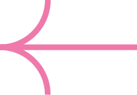

Delicate Insects
Design of a fictive book collection on insects for the French Natural History Museum. The purpose was to invite to take a new look on nature to preserve it.
The insects' preciosity is showcased by the elegant and romantic visual references through colours, typography and pink bows. The photographs only show living insects, in their environment.
The insects' preciosity is showcased by the elegant and romantic visual references through colours, typography and pink bows. The photographs only show living insects, in their environment.
